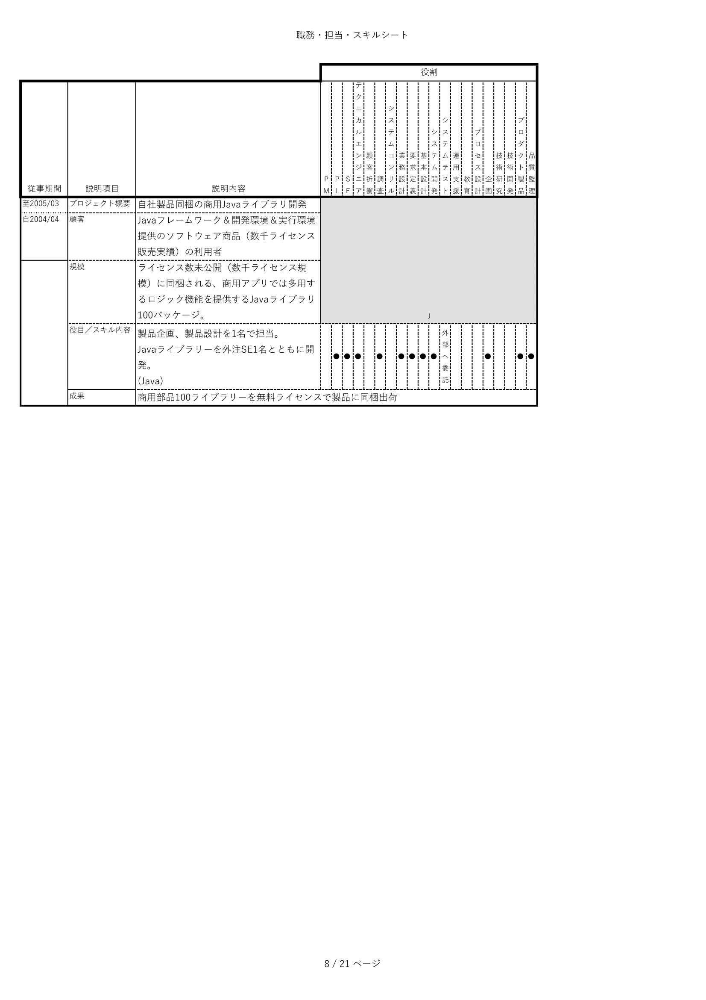

プロフィール
有吉 泰介
ありよし たいすけ
略歴
大阪大学大学院基礎工学研究科で情報工学を学ぶ。工学修士。
IT界のノーベル賞であるシャノン賞を受賞した嵩忠雄教授に
師事し、業務仕様が記述しきれない未完成なシステムでも動かせる、仮想コンピュータ、OS、基盤ソフトウェア、アプリケーションの全層を実装。
この分野で世界初の商用システムを稼働させる。
株式会社野村総合研究所に入社。
証券、生命保険、自動車販売等の営業活動を支援するシステムコンサルティングに就く。
システム基盤技術者として、日本初となる大規模広域の商用クライアント・サーバー構築プロジェクトで、 サーバーのアプリ基盤開発に参画。
システム構築の標準化技術者として、証券、信託、生保、損保、流通、産業、公共を同じ設計コンセプトで
構築する、アプリ部品とそれを用いるソフトウェア・フレームワークを開発。
そのソフトウェアの仕組みを用いながらシステムを自動生成するプロダクトを企画、製造、展開を行う。
その後、商用システム構築のリーダー兼テクニカルエンジニアを務める。
- 世界二位の広告代理店日本法人の広告制作支援システム
- 業界五位の商用機器販売商社の主幹商品の全国稼働監視システム
- 業界首位の信託会社の投資信託約定システム
- 労働省管轄下の労働人材斡旋システム
- 厚生省管轄下の看護師斡旋システム
- 業界五位の建設デベロッパーの全国開発拠点用の可搬型分散会計システム
エネルギー業界首位と五位の合併において、統合するブランドカードとクレジットカードの精算に関し、
新会社の業務設計とシステムの基本設計を担当。
この業務を主幹するシステムの構築マネージャを務める。
本社機構、人材開発部門においてグループ会社を含め初任から三年次までのSIer教育主任を担当。
本社機構、品質監理部門においてグループ会社を含め全社のSIerが遵守すべき、システム構築活動のプロセスの枠組み(フレームワーク)を開発し、全社規定としてその維持を務める。
東京大学松尾研究室の学外研究機関で機械学習とニューラルネットワークを学ぶ。
機械学習システムの開発/実行基盤を開発。
その後退職し、自ら会社を興すことを決意する。
職歴
※ ▶をクリックすると詳細が見れます（掲載は履歴をさかのぼっています）
教育事業の企画
AIによるシステム改修工数予測の精度更新
AI機械学習プラットフォームの構築
超大規模システム構築を行えるSIerの教育
グループ社員14,000名が順守すべきシステム開発プロセスの社内規定を策定
野村総研の新任～３年次SIer教育の主任責任者
システム構築成熟度のCMMI Level 2対応
商用Javaライブラリ集の開発責任者
エネルギー業界首位と五位合併時：クレジット業務の設計と処理システムの構築マネージャ
建設デベロッパー五位：可搬型会計システムのプロジェクト完遂責任者
ビジネス機器商社五位：主幹商品の全国監視システムの開発・保守リーダー
世界２位広告代理店の日本法人：広告制作提案システムのＰＯＣ技術支援リーダー
小売スーパー首位：2000年問題対応のシステム改修プロジェクトマネージャ
労働省管轄下の人材斡旋機構：シェア80%の全業務を支援するプロダクトの新製品開発リーダー
厚生省管轄下の人材斡旋機構：看護人材斡旋のシステム刷新開発のRDBデータ移行責任者
証券会社首位：投資信託の売買と約定を管理する機能のダウンサイジングと高速化を実現する技術開発リーダー
証券界、生保・損保界、流通小売業界、非製造産業界、公共など、同一のコンセプトでシステム構築を行える開発基盤を創案。
プロジェクトの企画・開発・展開の責任者、商用プロダクトオーナー
日本初の商用広域クライアント・サーバー基盤の開発において、サーバー機のアプリ基盤を開発するテクニカルエンジニア
業界や業界大手への営業支援コンサルテーションにおいて、実証実験システムの設計・開発を担当
関西某地銀：融資審査部門へ「未完な業務仕様でも動作できるシステム」を稼働させる。IT学術分野で世界初の実用商用システムとなる
（その他）知的資産流通を目的とした汎用蓄積モデルを制定するための国際規格へ参画（手弁当）
日本側での規格の後半部分をともに草案したEJBコンソーシアムのワーキンググループの皆様に感謝します。
会社はＯＭＧを脱会して非会員だったから手弁当でした...
資格・技能
趣味
ロック音楽鑑賞、ウォーキング、コーヒードリップ、食べ歩き、文房具コレクター
ラグビーフットボールは高校時代に県大会で準優勝。大学進学時も続ける。
近くはマスターズ花園2023に出場する。